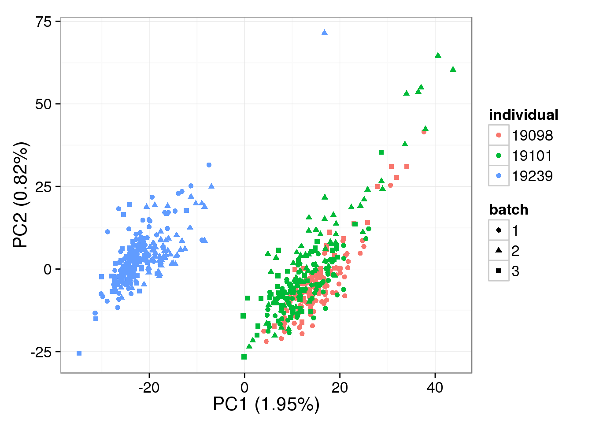
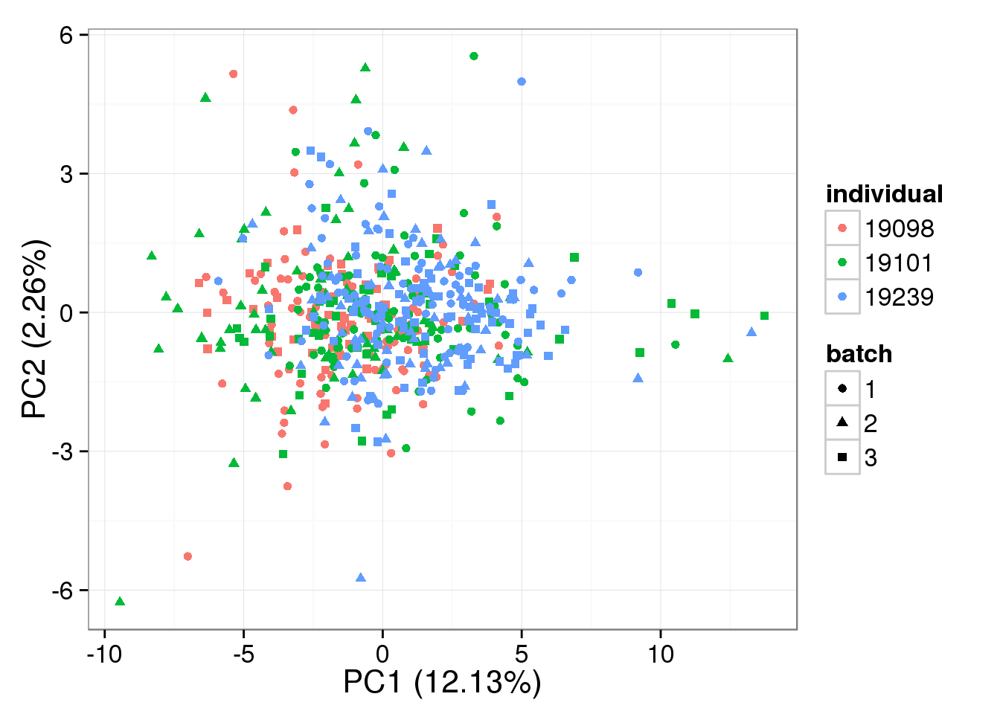

Last updated: 2015-09-10
Code version: e1c7de23b7d323b4ad7620051f93ce06b17077d5
We adapted limma’s algorithm for estimating variance components due to random effects. This analysis operates under the assumption that biological replicates (or batches within an individual in this case) share similar correlation across genes. Morever, the analysis permis negative correlation between replicates.
For every single gene, we will fit a mixed model assuming differences between batches are not individual-specific as follows
yijk = μ + αi + bj + ϵijk
,
where yijk is the log2 counts-per-million (cpm) for any gene in individual i, batch j, and cell k, μ is the gene-specific expression level across all cells, αi is the expression level specific to individual i, bj is batch j‘s deviation of expression level from gene-specific expression levels, and ϵijk is the models’ residual error.
We assume that bj follows a normal distribution with bj ∼ N(0, σb2) for j = 1, …, 9, and ϵijk ∼ N(0, σϵ2) for i = 1, 2, 3; j = 1, …, 9; andk = 1, …, nij, where nij denotes the number of cells in individual i, batch j.
For every single gene, we will fit a mixed model assuming differences between batches as homogeneous within individuals as follows
yijk = μ + αi + bij + ϵijk
,
where the only difference from the Cross model is the batch random effect bij, with i = 1, 2, 3 and j = 1, 2, 3. Hence $\hat{b}_{i.}$ estimates for individual i the random variation of expression levels from the entire population as a function of the variation across the three batches. Note that as before, bij follows a normal distribution N(0, σb2).
Note that limma does not accommodate fitting of nested random effect. We will use other algorithms to remove unwanted variation under the nested model framework.
source("functions.R")
library("limma")
library("edgeR")
library(ggplot2)
theme_set(theme_bw(base_size = 16))Input annotation
anno <- read.table("../data/annotation.txt", header = TRUE,
stringsAsFactors = FALSE)Input molecule counts
molecules <- read.table("../data/molecules.txt", header = TRUE,
stringsAsFactors = FALSE)Input list of quality single cells
quality_single_cells <- scan("../data/quality-single-cells.txt", what = "character")Keep only the single cells that pass the QC filters. This also removes the bulk samples
molecules_single <- molecules[, colnames(molecules) %in% quality_single_cells]
anno_single <- anno[anno$sample_id %in% quality_single_cells, ]
stopifnot(ncol(molecules_single) == nrow(anno_single),
colnames(molecules_single) == anno_single$sample_id)Also remove batch 2 of individual 19098.
molecules_single <- molecules_single[, !(anno_single$individual == 19098 & anno_single$batch == 2)]
anno_single <- anno_single[!(anno_single$individual == 19098 &
anno_single$batch == 2), ]
stopifnot(ncol(molecules_single) == nrow(anno_single))Remove genes with zero read counts in the single cells
expressed_single <- rowSums(molecules_single) > 0
molecules_single <- molecules_single[expressed_single, ]Remove genes with greater than or equal to 1,024 molecules in at least one of the cells
overexpressed_genes <- rownames(molecules_single)[ apply(molecules_single, 1,
function(x) any(x >= 1024))]
molecules_single <- molecules_single[!(rownames(molecules_single) %in% overexpressed_genes), ]Correct for collision probability
molecules_single_collision <- -1024 * log(1 - molecules_single/1024)Standardize the molecule counts to account for differences in sequencing depth. This is necessary because the sequencing depth affects the total molecule counts
molecules_single_cpm <- cpm(molecules_single_collision, log = TRUE)Prepare ERCC data
gene_rows_single <- grep("ERCC", rownames(molecules_single), invert = TRUE)
dim(molecules_single_cpm[gene_rows_single, ])[1] 17382 563gene_rows_ercc <- grep("ERCC", rownames(molecules_single))
dim(molecules_single_cpm[gene_rows_ercc, ])[1] 81 563First, we create a unique identifying ID for the 9 batches.
batch_unique <- with(anno_single, paste(individual, "_", batch, sep = "") )
table(batch_unique)batch_unique
19098_1 19098_3 19101_1 19101_2 19101_3 19239_1 19239_2 19239_3
85 57 77 68 52 78 67 79 Load the Humanzee package
if (!require(Humanzee, quietly = TRUE)) {
library(devtools)
install_github("jhsiao999/Humanzee")
library(Humanzee)
}Create design matrix and compute a consensus correlation coefficient using limma’s duplicateCorrelation function.
block <- batch_unique
design <- model.matrix(~ 1 + individual, data = anno_single)
dup_corrs <- duplicateCorrelation(molecules_single_cpm[gene_rows_single, ],
design = design, block = block)Fit a mixed model with the 9 batches being the random effect.
if (file.exists("../data/limma-crossed.rda")) {
load("../data/limma-crossed.rda")
} else {
gls_fit <-
Humanzee::ruv_mixed_model(molecules_single_cpm[gene_rows_single, ],
ndups = 1,
design = design, block = block,
correlation = dup_corrs$cons)
save(gls_fit, file = "../data/limma-crossed.rda")
}Compute expression levels after removing variation due to random effects.
molecule_batch_removed <- t( design %*% t(gls_fit$coef) ) + gls_fit$resid
pca_single_mixed_correction <- run_pca(molecule_batch_removed)
plot_pca(pca_single_mixed_correction$PCs,
explained = pca_single_mixed_correction$explained,
metadata = anno_single, color = "individual",
shape = "batch", factors = c("individual", "batch"))
Create design matrix and compute a consensus correlation coefficient using limma’s duplicateCorrelation function.
block <- batch_unique
design <- model.matrix(~ 1 + individual, data = anno_single)
dup_corrs <- duplicateCorrelation(molecules_single_cpm[gene_rows_ercc, ],
design = design, block = block)
# Consensu correlation between batches
dup_corrs$consensus.correlation[1] 0.03855768Fit a mixed model with the 9 batches being the random effect.
if (file.exists("../data/limma-crossed-ercc.rda")) {
load("../data/limma-crossed-ercc.rda")
} else {
gls_fit <-
Humanzee::ruv_mixed_model(molecules_single_cpm[gene_rows_ercc, ],
ndups = 1,
design = design, block = block,
correlation = dup_corrs$cons)
save(gls_fit, file = "../data/limma-crossed-ercc.rda")
}Compute expression levels after removing variation due to random effects.
molecule_ercc_removed <- t( design %*% t(gls_fit$coef) ) + gls_fit$resid
pca_single_mixed_correction_ercc <- run_pca(molecule_ercc_removed)
plot_pca(pca_single_mixed_correction_ercc$PCs,
explained = pca_single_mixed_correction_ercc$explained,
metadata = anno_single, color = "individual",
shape = "batch", factors = c("individual", "batch"))
sessionInfo()R version 3.2.0 (2015-04-16)
Platform: x86_64-unknown-linux-gnu (64-bit)
locale:
[1] LC_CTYPE=en_US.UTF-8 LC_NUMERIC=C
[3] LC_TIME=en_US.UTF-8 LC_COLLATE=en_US.UTF-8
[5] LC_MONETARY=en_US.UTF-8 LC_MESSAGES=en_US.UTF-8
[7] LC_PAPER=en_US.UTF-8 LC_NAME=C
[9] LC_ADDRESS=C LC_TELEPHONE=C
[11] LC_MEASUREMENT=en_US.UTF-8 LC_IDENTIFICATION=C
attached base packages:
[1] stats graphics grDevices utils datasets methods base
other attached packages:
[1] testit_0.4 Humanzee_0.0.0.9000 ggplot2_1.0.1
[4] edgeR_3.10.2 limma_3.24.9 knitr_1.10.5
loaded via a namespace (and not attached):
[1] Rcpp_0.12.0 magrittr_1.5 MASS_7.3-40 munsell_0.4.2
[5] statmod_1.4.21 colorspace_1.2-6 stringr_1.0.0 plyr_1.8.3
[9] tools_3.2.0 grid_3.2.0 gtable_0.1.2 htmltools_0.2.6
[13] yaml_2.1.13 digest_0.6.8 reshape2_1.4.1 formatR_1.2
[17] evaluate_0.7 rmarkdown_0.6.1 labeling_0.3 stringi_0.4-1
[21] scales_0.2.4 proto_0.3-10